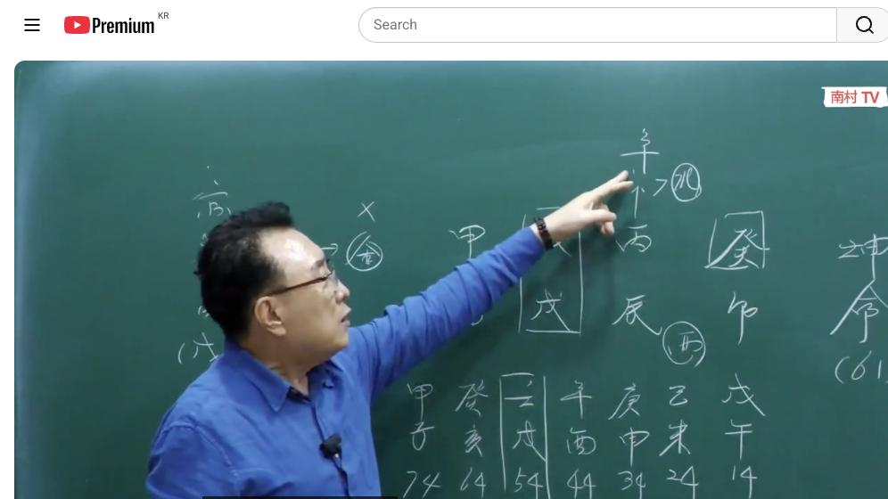
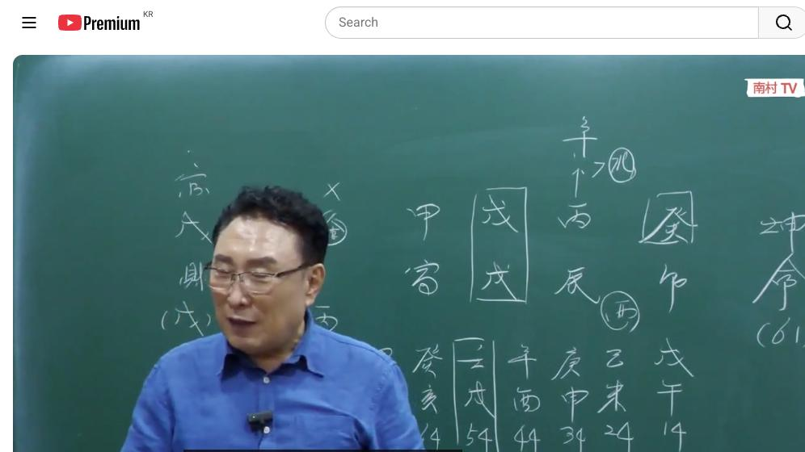
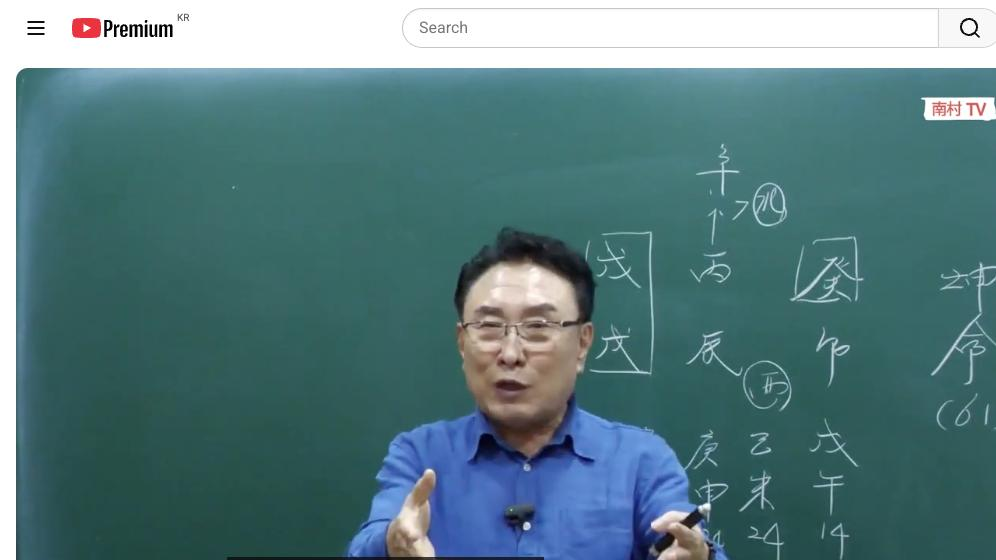

남촌물상TV 전체 문서 › 동영상 V0018
[실전사례]6 '이것' 때문에 문 열 수밖에 없는 여자

| 문서 번호 | V0018 (동영상) |
|---|---|
| 영상 URL | https://www.youtube.com/watch?v=kZ0yWnaakgU |
| 영상 ID | kZ0yWnaakgU |
| 게시일 | 2023-10-30 |
| 길이 | 29:44 (1784초) |
| 조회수 | 5,065회 (수집 시점 기준) |
| 카테고리 | People & Blogs |
| 자막 | ko (자동생성) |
| 수집 시각 | 2026-08-30 17:03 (KST) |
영상 설명 (YouTube 설명 원문 그대로)
'이것' 때문에 문 열어 줄 수밖에 없는 여자의 명조 #실전사례 #천간합 #여자사주 #명조
전체 자막 (632구간 · 타임스탬프 클릭 시 해당 장면으로 이동)
[0:01][음악]
[0:07]자 이제 오늘 그 재밌는 사주를 할
[0:09]건데
[0:10]여러분들이이이 사주의 특성과 아 왜
[0:14]부부 관계 원만치 못하고 왜 그
[0:17]바깥으로 다른 남자를 찾는가 이런
[0:20]부분에서 설명을 드릴
[0:22]겁니다 자 여자사 61세 개묘 병진
[0:26]무술
[0:28]갑인 자 이렇게 사주가 그 구성이 돼
[0:31]있습니다 그러면 이제 무술일 주의
[0:34]특성을 우리가 잘 아시잖아요 자
[0:37]무술이란 특성이 뭐예요 짠돌이 자
[0:41]짠돌이 좋습니다 짠돌이 좋고 왜
[0:44]그러냐면 무술이라는 무토 일주는
[0:47]재물이 물이기 때문에 물을 무술로서
[0:50]철벽같이 막을 수 있다 해서
[0:52]짠돌이라고 하는 거예요 그 이런
[0:54]사람들이 대부분 보면 그어 굉장히 짠
[0:57]사람 중에 하나다 아 이렇게 보시면
[1:00]돼요
[1:02]그러면 특징이 두 가지가 있어요이
[1:05]사주는 공부를 많이 하면 안 되는
[1:08]사주고 또 어 결과적 왜 부이 합이
[1:11]안 되는가 이제이 원인을 설명을 드릴
[1:13]건데 우선 이제 제관으로 보면 오행이
[1:16]다 있습니까 자 보시면 없는게 뭐예요
[1:19]금 자 금이 없어요
[1:21]오행에 자 금이
[1:23]없다 그럼 모든 사람들이 무토 1주가
[1:27]그 살아하는 방법이 뭐라 그랬어요
[1:29]나무를 나무를 심어서 물을 빨아들이면
[1:32]재물이 돈이 되죠 그러면 자 그것이
[1:36]된다면 금의 행위를 해서 그 물을
[1:40]만들어라고 얘기했잖아요 근데이 사주는
[1:43]나무가 다 준비되 있고 땅도 준비되
[1:45]있고 다 있습니다 근데 금이 물을
[1:48]만들 수 있는 금생수 할 수 있는
[1:51]금이 사주에 없다 이게 특징이에요 자
[1:55]그러니까 우리 항시 우리
[1:58]물에서는 가장 쉽게 사주는 방법을
[2:00]택할 수 있잖아요 그럼 한번 재관을
[2:03]한번 먼저 해 볼까요 자 그러면 재과
[2:07]관의 관법을 한번
[2:09]해보면 자
[2:11]무토의 자 관으로
[2:13]보면 관이 뭐예요 수 자 무터의 관
[2:19]목이 자 목의 관은 금인데
[2:23]없다 자 그럼 없다이
[2:26]말이에요 자 그다음에 또 법으로 제로
[2:30]어떻게 보냐 제 자 무토의 재물은
[2:34]뭐예요 여기서 계수 자
[2:37]계수 계수의 재는 병화 자 병화에
[2:41]하하 자
[2:45]그러면이
[2:46]관목에서 어떻게 할 건데가 답이라고
[2:49]그랬잖아요 갑목을 그러면 갑목이
[2:53]금이라는 거 뭐냐 그러면 갑목에 칼
[2:55]자루도 될 것이고 또 금이 물을 만들
[2:59]수 있는 역할 해 줄 거고 어 근데이
[3:02]사주 자체가 저 계수가 물이 적은 거
[3:05]아니에요 현재 자이 계수에 물이
[3:08]적다 그러면 여기 무토 일간의 계수는
[3:12]재물인 물이 적으니까 재물이 적다
[3:14]얘기 아니에요 이거예요 답은 자
[3:18]그러면이 무토의 제재 관의 관법을
[3:21]가도
[3:22]금인데 여기에서 돈을 제로 재 재
[3:26]관법을 가면은이
[3:29]계수에서 물을 어떻게 더 많이 만들
[3:31]것이냐 그 얘기 아니에요 물이 초주
[3:34]재물이 물이니까 그러면 물을 만드는
[3:38]글씨가 천간에 어디가 있는가를 봐야죠
[3:41]그렇죠 여기에이
[3:45]평화에서 신금을 끌어다 쓰면 뭐가 돼
[3:50]수에 물이 되니까 아 재물을
[3:53]만들 수 있라는 답을 얻을 수
[3:56]있잖아요 자 그다음에 순서가 그 자
[4:00]의 뿌리는 뭐예요 유금이 아니에요
[4:02]그러니까 간단해 신금의 뿌리는 유금이
[4:04]유금 한번 써봅시다가 자 자 유금을
[4:09]썼어요 그러니까 네가 먹고 사는
[4:12]방법에
[4:14]의해서는 합수 재물이
[4:18]생기듯이 신금의 뿌리가 금이니 유금의
[4:22]행위를 하면 되겠네 답이에요 뭐 할래
[4:25]그거 하면 돼 이렇게 그거 여러분들이
[4:28]진로 상담을 한다 가 이런 걸 어떻게
[4:31]하면 좋을까요 했을 때 간단하게 할
[4:34]수 있잖아요 뭐 용신을 제가 찾습니까
[4:35]뭘 다른 거 아무 필요 없어요
[4:38]간단하게 자연 이치 그대로 설명을 한
[4:40]거기 때문에이 우리의 특히한 고유의
[4:44]간법 비법 이것을 지금 전부 다
[4:47]공개적으로 하고 있는데 재와 관의
[4:50]관법을 가지고 네가 뭐를 해서 잘
[4:53]못고 살 수 있느냐 이게 답이란
[4:55]말이에요
[4:57]해답은 자 모든 사람들이 모든
[5:00]사람들이 상담할 때는 뭐 뭐요 어떻게
[5:04]하면 잘 살 수 있을까 어떻게 하면
[5:07]내가 좀 더 남들처럼 부자처럼 부자가
[5:11]되고 편하게 살 수 있을 하는 것들
[5:13]물어온 거란 말이에요 잘살면 잘
[5:14]올까요 안
[5:16]올까요 편하면 안 오죠 잘 대부분이
[5:19]그 여러분들은 그 정법을 보고라도 어
[5:24]네가 뭐 때 왔는가 또 우리 물상
[5:26]쉽게 찾는 방법도
[5:28]다게어요 그 굳이 내정도 배울 필요
[5:31]없다 그냥 우리 물로만 가지고 내정도
[5:34]알 수 있고 직업도 찾는 방법도 쉽고
[5:38]사실 지금만 찾으면 반반 다 하는
[5:40]거예요 여자는 어때 시집만 잘 가면
[5:43]되지 근데 시집을 잘 못 가서
[5:45]문제지음 이게 답이에요 그러니까
[5:47]여러분들이 지금까지 쭉 이렇게 사주를
[5:50]보시면 어 재관을 항시 먼저 보는데이
[5:55]남자의 제관을 남자가 관 아닙니까
[5:58]그러면 이제 관의 입장을 생각해 보고
[6:01]돈의 입장을 생각해 두 가지 생각해
[6:03]볼 거 아니에요 자
[6:05]보시면 관의 입장 여기이 간의 간법
[6:09]Pro 목의 입장으로 보면은 여기서
[6:12]목의 입장으로 보면이
[6:13]갑목이 계수의 물 갖고 빨아들이는
[6:16]작다 그 말이에요 그죠 작잖아요
[6:20]그러면 자
[6:21]우리는이 계수가 목이라는게 뭐예요
[6:24]목은 교육 건축 사람을 상대하는 것
[6:27]중에서 포함되는 의미죠 그럼 목이
[6:30]만약에 초학교 우리가 나이가 어릴
[6:33]때는 학교 아닙니까 그러면 자 초등
[6:36]고등학교 중고등학교 초등학교 다
[6:37]고등학 대학 시절까지 갑목이
[6:42]그러면이 갑목이 심어져서 물을
[6:44]빨아들이면 물이 적잖아요 그럼 학교
[6:47]다니면 돈이 없어져 안 없어져
[6:49]없어져요 그 많이 배우면 안 되는
[6:51]사주 간단하잖아요 그래서 이런 사람들
[6:54]사주는 공부를 많이
[6:57]하면 돼 안 돼 안 돼요 자 초등학교
[7:01]나오면 재벌 중학교 나면 준재벌
[7:05]대학교 나오면 이것도 저것도 아니지
[7:08]이런 사주가 된다 그 말이에요 이런
[7:09]것을 알고 상담을
[7:11]하시면 대학을 가서 좋다 안 같다
[7:14]하는 것이고 그러면 이제 이런
[7:16]사람들한테 우리가 아 그러면 나는
[7:17]청소 공부 못 해요 그거
[7:20]아니잖아요 그러면 쉽게해서 우리는 뭐
[7:23]돼야 돼 물건도 유학을 가면 되잖아요
[7:25]그러니까 어떤 사람들 우리 물상이
[7:27]자꾸 뭐 해에 가라 하는데
[7:30]해의 개념을 그 사람들은 이해를 잘
[7:32]못 하시기 때문에 그렇고 고전해
[7:35]해외랑 관법을 쓸 수가 없습니다
[7:37]물상론 그래는 해에 어느 나라를 가면
[7:41]좋아가지고 구배를 다 할 수 있는게
[7:42]저희 물상론 아니겠습니까 그
[7:44]여러분들이 지금 현업 하시면서도
[7:47]굉장히 적중률이 높고 여러분들이
[7:49]활동하시는데 굉장히 편하지 않아요 자
[7:51]그러면 제 간단하게 설명을 해서 일단
[7:55]갑목이 교육을 해서 공부를 많이 하면
[7:58]안 된다는 걸 하나 얻 고 그다음에
[8:01]다음에 그러면 자 하나씩 하나씩
[8:03]해결합시다
[8:05]공부를 그러 하고 싶은데 내가 못하면
[8:07]어때요 해야 되는데이 말이 나왔다고
[8:10]가정을 하면은 국내에서는 잘 안 되는
[8:13]거 아니에요 자 그래서 국내에서
[8:15]만약에 살고 있다면 내가 애국을 못
[8:18]갔을 때 해에 젊었을 때 만약에
[8:21]직장을 다닌다면 애국의 회사를 다닌게
[8:25]좋다라고 하죠 왜 외국에서 이미 물
[8:28]물을 건너갔다 온 그 재물이 있기
[8:30]때문에 하는
[8:32]거예요 그래서 우리는이 사주를 볼 때
[8:36]자 재물이 안 된다고 생각 내가
[8:38]애국을 못 갔다고 생각을 하면은 애국
[8:42]회사를 다니게 좋다라고 상담하시는게
[8:44]좋다 이렇게 답이 넣을 수 있어요 자
[8:47]그러면 해를 갔다고 가정합시다 만약에
[8:50]유학을 가요이 사람이 그러면 지금
[8:53]우리는 어 우리 불상에서 팔자가
[8:55]바뀐다고 주장한 사람이 저고 바뀌야
[8:58]져야 된다고 하는 사람이 저다 그
[9:00]말이에요 국내에서이 수준의 사주를
[9:03]가지고
[9:04]산다면이 테두리 갖고 사주를 사는
[9:07]거예요 자 그러면 내가 미국에 산다면
[9:11]미국의 생활권의 사주에서 사는 거예요
[9:14]그게 다른 차이점이란 말이 그래서
[9:17]팔자는 바뀌어져야 되고 바꿔 져야하고
[9:20]바뀔 수 있다라고 하는
[9:23]겁니다 어제도 이제 그 그 전화도
[9:26]상담하시면서 한 것도 뭐냐면 팔자가
[9:28]바뀔 수 있습니까
[9:31]있다 그러면 나는 왜 여자를 만났는데
[9:35]우리 여자는 맨날 그 저 별로 좋
[9:36]전자가 아니고 맨날 그 저하고 안
[9:38]좋은 관계에서 이혼하고 그래요 이렇게
[9:40]얘기 물어봐요 그래서 사람이 선정할
[9:43]때 인생일 때 누구를 만나느냐가
[9:46]1번이고 어떤 환경 속에서 살고
[9:50]있느냐가 2번이다 이런 팔할 수 있다
[9:53]얘기예요
[9:55]그래서 우리는 궁합이란 존재를 가지고
[9:59]대부 속궁합이 어쩌니 뭐가 어쩌니이
[10:01]얘기만 할게 아니라 정작 사주 오행과
[10:05]구성에
[10:06]따라서 내가 저 사람을 만나면 나한테
[10:09]무엇이 저 사람이 나를 도움을 줄
[10:11]거고 나는 뭐를 저 사람한테 줄 수
[10:13]있는가 이게 궁합이 돼야
[10:15]되는데 그저 옛날 궁합은 속궁합이
[10:19]좋아 뭐이 좋아만 좋타 이렇게만 하고
[10:22]사는 그런 궁합은 고전에서 얻어 줄
[10:24]수 있는 그런 궁합이라 우리
[10:28]물상에는가 한테 어떤 생각을 가지고
[10:31]있는것도 다 알아 무슨 마음을 가지고
[10:34]너가 만나고 있는 것도 다 안다 그
[10:36]말이에요 또는 a 무슨 마음을 가지고
[10:39]네가 접근하고 있는 것도 알 수가
[10:41]있다 그러면 그것이 서로 필로의
[10:44]조건에 하해 결혼과 궁합이 이루어진
[10:47]걸로 판단한게 물론이다 그
[10:50]말이에요 그러니까 궁합이
[10:54]중요성은 굉장히 중요하죠 그서 우리
[10:58]남는 라는 걸 제가 지금 강의도 하고
[11:01]있고 더 섬세하게 할 수 있는 강의가
[11:03]앞으로 주어질 겁니다 지금 시대는
[11:07]시대는 심리학의 시대로 많이 가고
[11:10]있는데 우리는 심리학을 사주상으로
[11:13]사주 심리학으로 볼 수 있는게
[11:15]물상론이에요 그것이 우리가 제가
[11:18]개발한 마음을 읽어내는
[11:22]안심법문 그 사람의 심리와 그 사람의
[11:25]무슨 생각과 모든 걸 다 읽어낼 수가
[11:27]있다이 말이에요 그 여러분들은 제가
[11:30]앞으로도 제가 상담을 사주 심리학을
[11:33]할 겁니다 그거는 왜 할 수 있냐
[11:36]그러면 제가 쓰는 안법 알게 되면
[11:41]여러분들이 그 사람의 상대를 봐
[11:43]사주만 가지고 네가 무슨 생각을
[11:44]가지고 있다 다 안다 그 말이에요
[11:46]이게 마음의 안심이에요
[11:48]그래서 정신적인 필요 있지 냐도 그
[11:51]정신 계 표해 지금 현재 그 표하지
[11:54]않게 하는 방법을 제시해 할 수 있는
[11:56]거예요 그것이 이제제 소위 우리가
[11:59]상담이나 이거 하는
[12:01]건데 우리 물상 기초 이론에서 모두
[12:05]심법이 다 적용되기 때문에 기초를
[12:08]여러분들이 제가 책에 써놓 그 과정을
[12:11]여러분들은 거기에 내 생각을
[12:14]접목시켜서 나의 생각을 다 확인할 수
[12:18]있는이 여건이 돼 줘야 여러분들이
[12:20]식품이 생기는 거예요 제가 이번에
[12:22]이제 28일날 중국 출장을 가는데
[12:24]아이 다음 아마 시간에 그 다음 주
[12:27]전면 십니다 아 아 그 축장 갈 때도
[12:31]거기 이제 그 사람들이이 저를 다시
[12:33]찾는 이유가
[12:35]뭐냐 그때 상담 두 2개월 전에
[12:37]상담이 6월 달에 했던 상담이 다
[12:39]맞아요 그러기 때문에 그 사람이 다시
[12:41]지금 부른 거란 말이에요 소위 천억대
[12:44]대한 준 재벌들이 가까운 사람들이
[12:47]황조의 젊은 계층의 사업가들이 저를
[12:50]찾는 이유가
[12:53]그겁니다 종업은 어떤 자기 그 회사
[12:56]중역을 채용하는데 내가 능하게 설명을
[12:58]해줬어요 그랬더니
[13:00]그대로 맞아서 다 갔답니다 그래서
[13:02]다시 선생님 오셔서 한번 다시
[13:03]상담해야 되겠습니다 이렇게 해서 제가
[13:05]이제 그 상담을 28일날 제가 중국
[13:09]출장을
[13:10]갑니다만 아직까지 한국에서 중국
[13:14]진출한 사람
[13:15]없어요 한국 사람이 중국에서 진출해서
[13:19]사주 상담할 수 있는 사람 없다 그
[13:21]말이야요 아직 제가 최초 거예요 아마
[13:24]그 책도 가지고 가고 갑니다 근데
[13:28]여러분들은 이제 우리
[13:31]물론이이 너무 홍보 안 돼 있고 지금
[13:34]사람들이 몰라요 제가 만들어는이
[13:37]관법을 다른 사람들이 모르고 때문에
[13:40]아직까지 홍보가 덜 된다 입장이지
[13:43]이제 유튜브 활용이 되고 여러분들이
[13:46]공부하 하고 계시니까 활용 하시니까
[13:48]굉장히 좋습니다 또 지금 뭐 어어
[13:51]내가 밝힌 신 선생님도 전화 어
[13:54]전화와서 입금하시면 얘기 거예요 아주
[13:57]선생님 고맙습니다 늘 제가 그 활용을
[13:59]하는데 아주 재밌게 활용을 잘한다고
[14:01]저한테 어제 전화 왔어요 근데 이런
[14:03]것이 저는 그의 보람이라고 생각을
[14:05]하고 합니다 아 이번에 유튜브에 그
[14:08]댓글다는 거 보세요이 2년 전에
[14:10]신축년 제가 상담했던 부분이 그
[14:12]사람이 어떻게 유튜브를 알고 들어와서
[14:14]그 선생님이대 써 놓은게
[14:16]있어요음 아주 장난하 썼습니다 그
[14:19]사람이 저한테 전화 상담을 하고 저
[14:21]누군지 몰라요 근데 신년에 상담했던게
[14:25]저를 이제 유튜브 보니까 이제
[14:26]알아차린 거예요 그래서 거기 댓글
[14:28]달아놓고 있습니다 아 한번
[14:31]보세요 자기 어머니도 그다 상담
[14:33]했었어 그때 당시 전화 상담을 했어요
[14:36]그게 이제 그 지금 저희들이 제가
[14:39]상담한 전국적 상담한 분들이 아직까지
[14:42]저희 유튜브를 잘 몰라요 그래서 이제
[14:45]그 남촌이 용어를 쓰기 때문에 알아
[14:47]제가 남촌 용어를 쓰거든요 그래서
[14:48]이제 좀 아는데 앞으로 그런 사람이
[14:50]많이 나올 겁니다 그 사람은 제가
[14:52]2년 전에 신축 년을 봤던 사람이에요
[14:54]아주 정확하게 잘 았습니다 자
[14:56]그다음에 자 여기서 다시 설명 들어서
[15:00]그러니까 공부를 많이 하면 국내에서
[15:02]안 된다 했는데 그러면 자 미국으로
[15:05]갔다 예를 들어서 자 미국을 같으면
[15:08]신이죠 그죠 미국의 나라가 뭐예요
[15:12]신이었다 하 그럼 경신을 한번 볼까요
[15:16]경신이 되면은 면은 여기 사주하고
[15:20]구성이 맞는가 안 맞는가 보시면
[15:22]돼요 자 신이 온다는 얘기는 지지가
[15:25]뭐가요 인신 사회가 되죠 그 국
[15:29]가서이 사람이 만약에 생활한다면 인신
[15:32]사회로 살고 사는 거예요 인신
[15:34]한다는서 어떤 전략적인 마케팅의
[15:37]업으로 할 수 있는 사람이 된다 그
[15:38]말이에요
[15:39]한국에서는 그저 금을 쓰는 직업으로
[15:42]존재하지만 미국에 살게 되면 그러한
[15:45]일이 천간에 다 그게 자 천간에
[15:47]오시면 자 볼까요 금 갑 갑 무병이
[15:50]다 다 쓰죠 이거 우리가 그 고정에서
[15:53]뭐라 하잖아요 그것도 경
[15:56]갑무경 그러면 이게 다 쓰니까 얼마나
[15:59]사주죠 물 임수 해외가 임수지
[16:02]생기잖아 굉장히 좋은 사주가 되는
[16:04]거예요 그래서 미국의 갔을 경우에
[16:07]전략적인 마케팅 스타일로 전략을 하면
[16:09]너 크게 선고할 수 있어 이러한 답을
[16:12]얻을 수가 있다이 말입니다 근데
[16:15]국내에서는
[16:16]해봐야이 병화 그런 신금을 해서 먹고
[16:19]사는 방법이 없다 그
[16:21]말이에요 이렇게 해서 이제제이 사람이
[16:25]살아나가는
[16:26]방법이 차이가 있다는 것을 설명 드는
[16:30]겁니다 자 그다음
[16:34]그다음 자 지지의 행동 면에 보면은
[16:38]행동 보면은 볼까요 행동에 잘
[16:41]보세요 갑 인과 입묘지 집이 돼 있돼
[16:45]있어요 돼 있어요 돼 있죠 그럼 자
[16:47]인묘진 해서 갑목이 심어져 있어요
[16:51]그러면 저 물이 맞 말라 안 말라 그
[16:54]관이 남자죠 근데이 사람의 마음을
[16:58]어떤 마 심법을 잠깐 해보면
[17:02]해보면이 무 시에 있는 시에 있는
[17:05]갑목이 나한테 심어지게 그죠 나한테
[17:09]심어져
[17:10]근데이 갑목의 관의 뿌리까지 다 여기
[17:14]돼 있어요 임묘 진호 됐어 그럼
[17:16]자식하고 연계 있어 없어 있잖아요이
[17:18]사람 오직 자식 관계 때문에 존재하고
[17:21]살아이 말이에요 물어보면 확인하
[17:25]맞습니다 자 돈 보면 누구 지어 싶어
[17:28]자식
[17:29]자식한테 주고
[17:31]싶지 이게 핵심이란 말이에요 간단해
[17:35]어려운 거 아니에요 그러니까 이런
[17:37]사주의 특성을 보고 이제 아 자식
[17:40]관계도 알고 자 그럼 부부 관계 이게
[17:43]핵심이에요 부부관계 왜 보부하이테크
[17:58]까지 안해야
[18:00]돼 자 그 말 무슨 말이에요 노수
[18:03]되면 어떻게 돼 뭐가 말라 물이 말라
[18:07]물리 말 돈이 없어지잖아 그러니까이
[18:10]남자는 돈만 없애는
[18:13]남자야
[18:16]간단하잖아요요
[18:18]간단해 이렇게 쉽게 찾을 수 있는
[18:20]겁니다 자 그러면 그거는 핵심적인
[18:24]근본의 원인이고 왜 부부 관계가 돈만
[18:27]갖고 안 좋은 것이 아니라 왜 안 좋
[18:28]냐 부부이 왜 안
[18:33]이루어지냐는이 돼
[18:36]있고네이 호수위 되면 나를 마르지아
[18:39]그리고 부부 궁이 합이 안 돼 자
[18:42]나무가 심어져서 물을 말 나를 돈을
[18:44]없애버 남자고 부부 궁에이 토에 합이
[18:49]안 되기 때문에이 사람은 자식 때문에
[18:52]사는 거고 부부 관계는 멀어지게 돼
[18:55]있다 하는 결론이 나오는 거예요 이해
[19:00]됐습니까 자 이렇게 그 척척척척 답이
[19:03]나와야
[19:05]돼 그게 어려울 거 같지만 그렇지
[19:08]않아요 굉장히 쉬워요 자 그러면
[19:12]여기서 이제 모든 존재 사주가 다
[19:13]풀어졌어요 핵심적인 것이 궁금증 다
[19:16]해수가 됐다 자
[19:19]그러면이 사람은 지금 필요한게 뭐예요
[19:22]자 자이 사주 사람 이런 거 있어요
[19:25]우리가 살아 나가는데 제일 이사주
[19:27]특성이 필요한게 뭐냐
[19:29]뭘까요 금 자 금과 금과 무 금과
[19:35]무리죠 그러면 잘 봐요 어떤 남자고
[19:39]인연이 바뀐 남자라면 인연이 있을까
[19:41]한번 봐봐
[19:43]있을까
[19:45]있을까 어떤 남자인 있느냐 이것도 다
[19:48]우리 찾아올 수 있어요 우리 상에서는
[19:50]자 어 자 나 마만 좋고 뭐도
[19:55]좋은데을 잘 보시면 잘 보시면 무토
[20:00]일간이 나무가 심어져서 물을 빨라진다
[20:03]사업이라 그랬죠네 그래서 사업과의
[20:06]갑목에
[20:08]금이요 아 설 자 그럼 건설 쪽에
[20:10]있는 관련 남자고 인연 있어 없어
[20:12]있어요
[20:13]있지 답을 금방 찾을 수 있는 거예요
[20:16]우리들은 그러니까 얼마나 쉽게 사주를
[20:18]볼 수 있고 정확하게 갈 수 있어이
[20:20]사람은 사실 사귀는 남자가 건설에
[20:23]관련된 사람하고 사귀
[20:25]있었어 이거란 말이에요
[20:29]그러니까 제가이 우리 물상에는
[20:33]다른 남자를 만나면 네가 어떤 남자를
[20:36]만나고 있다는 것도
[20:39]달아이 정도까지 파을 수 있는 사람이
[20:41]우리 울상 밖에 없어요 정확하지 그게
[20:44]모든 사주를 풀고 하는 것은 근 거가
[20:47]명확해야 돼 큰 거를 제시 못하면
[20:51]그건 말이고 그냥 글쟁이 수고 글쟁이
[20:54]사주쟁이
[20:55]여러분들이 유튜브에서
[20:57]보시면 강의를 잘하는 사람이 있습니다
[21:00]입으로 청산유수 하는 사람 있어요
[21:03]사주를 데면 못 풀어 그거는 권정인
[21:06]사주에 아무 소 없는 거예요
[21:08]여러분들이 이론을 배우는 목적은
[21:11]결과적으로 사주를 잘 보기 위해서
[21:14]배우고 있다이 말이에요 그죠 근데
[21:17]이론만 잘잘잘 해놓고 사주 되면 뻥
[21:20]하고 있으면
[21:21]되겠어요 우리 상도는 바로이 현실적인
[21:26]얘기가 변이에 따로 변에 대한 것을
[21:30]대울 필요도 없고 있는 그대로만
[21:32]설명하면 통변이 되는 거예요 그래서
[21:35]저희가 되는이 학문 자체가 얼마나
[21:38]좋다는 시간이 갈수록 더 증명이 될
[21:41]겁니다 앞으로 제가 말씀드린
[21:45]것은 지금 500명이 제가죠 우리
[21:48]유튜브 495 일명 됐어요 500명이
[21:50]되면은 제가 세 사람을 추첨해서 4주
[21:53]무료 4주를 제가 봐준다고 했습니다
[21:55]그 홍보 이벤트 할 거예요 명 명
[21:58]되면 제가 나이를 한다고 그랬어
[22:01]직접적인 나유 방송을 해서 직속으로
[22:04]풀어드릴 겁니다 그래서 몇몇 곤란해서
[22:07]직접 나이을 하게 되면 많은 사람들이
[22:09]실전이 능할 수 있는 남촌 선생 이게
[22:12]될 거란 말이에요 우리 물론이 그
[22:15]다른 사람들은 실전이 잘 어렵습니다
[22:17]저는 실전을 무슨 사주 같다고 다
[22:19]맞출 수
[22:20]있어요 그러니까 그때 당시 가서 이제
[22:23]실제로 도전하게 되면 당연히 사람은
[22:26]모일 수밖에 없다 될 것을 봅니다
[22:27]여러분들도 많이 응원해주셔 되고
[22:29]지원해 주셔야 됩니다 자 그러면 지금
[22:33]답은 거의 나왔어요 자 그러면
[22:36]여기에이 금을 쓰는 사람이 왜 그러면
[22:40]건설업을 하고 관계가 있느냐 그
[22:42]말이에요 자기 사주로 놓고 봐야
[22:45]돼요을 자 근데이 갑목을 써야 되는데
[22:50]칼루가 뭐이 금물 금의 칼 날를 쓸
[22:53]수가
[22:54]있잖아요 그러니까 건설 하는
[22:57]사람인데 금하는 사람이 것은 자 금이
[23:01]물을 만들 될거 아니에요 관의
[23:02]관이에요 그러니까 자 나의 관의 관
[23:04]바깥 남자지 뭔 잘 아시겠죠 나의
[23:08]관이 관의 관이야 바깥 남자 그러면
[23:12]이러한 이치에 의해서이 사람은
[23:15]건설하는 사람하고 인연이 있다라고 볼
[23:18]수 있는 것이고
[23:20]그러면이 사람이 만나는 목적은 뭐예요
[23:23]이거 잘 보세요 지금 만나는
[23:27]금생에서을 방법이 그러니까이 남자는
[23:30]절대 돈을 안 주면 만나지 않아이
[23:33]여자는 이게 특징이에요
[23:36]목적이이 계수의 물을 임수로 끌어다가
[23:40]본인이 사용하고 싶은 마음을 가지고
[23:43]있다 그러니까 건설해서 큰 나무를
[23:47]심어서 물을 많은 물을 더 빠르고
[23:49]싶은 거지 이게이 사람 마음이에요
[23:52]이게
[23:58]이렇게 응용이 생깁니다
[24:02]간단합니다 그러니까이 사람의
[24:05]마음은 더이 갑목을 활용을 해서 할
[24:09]건데 그러면 물을 더 많이 빨아들일
[24:12]건데 그 말 아니에요 그런데이 사람이
[24:14]없는 금을 금을 지금 사용한다는
[24:16]얘기는 칼로서 금을 쓰게 되면은 돈이
[24:19]나올 것이다 그 말이에요 근데 돈을
[24:22]돈이 만약에 안 주면 어떻게 돼 너지
[24:25]캔슬
[24:26]있지 그래서
[24:30]을의
[24:31]자는건 아 남자는 아 왜 자 나는
[24:36]불타는 정 가지고 있어 그 얼마 할
[24:40]수 있어 그 말이에 왜 술로
[24:43]술로 합을 이루게 되면 불타는 정은
[24:47]사람보다 강하다이 용어를 여기 쓸
[24:49]수가 있는 거예요 그 나는 그런
[24:52]능력을 가지고 있어하는
[24:54]왜이자 원래가 술 가 호수에 연결이
[25:00]되면 이성에 굉장히 강해진다 이것도
[25:03]우리는 알 수가 있는
[25:06]거예요 그러니까 본인이 타고 날 때이
[25:09]호수에 불타는 정리을 타고 나 있어
[25:12]그러면 남자들은 나 잡을 수 있어하는
[25:14]생각을 가지고 있는
[25:16]거예요 언제든지 나 남자들이 나한테
[25:19]내가 하면 걸려들어이 생각 할 수
[25:21]있는 거예요 그래서 여러분들이이
[25:23]사주의 구성을 이렇게 찾고 찾고
[25:25]보시면 어떤 이치가 정확하게 움직이고
[25:29]있는가를 알 수가 있는
[25:31]거예요 자 자 그다음 시간이 없으니까
[25:35]이제 뭘로 가야
[25:37]되느냐 지금의 상황을 한번 해보자
[25:39]지금의 상황 앞으로 우리는 과거 미래
[25:42]현재를 할 건데 지금 임술 대운이
[25:45]있죠 그렇죠 자 임술 대운이 있으면
[25:49]한번
[25:50]볼까요 사주를 보실 때 주 보실 때
[25:54]여러분들이 잘 생각을 해보세요 임술
[25:57]재우 안 내면 하지
[25:59]말고 재운이 왔는데이 재를 어떻게 쓸
[26:02]것인가를 항시 연구하고 그랬잖아요
[26:06]자 임술 이온 임술 대운이 온다는
[26:09]얘기는 물이 많아진다는 얘기죠 자
[26:11]그럼 여기다 임술 하나 써 봐야 다
[26:13]자 임수은 자 물이
[26:15]많아졌어요 자 물이 많아지면 여기
[26:18]여기에 나무를 심어서 빨아들이 할
[26:20]건데 그 얘기 아니에요 물은 마음만
[26:22]넣으면 내 것이 아니야 무토 일주는
[26:25]사업한 사람이 제일 많습니다 그
[26:27]이유는 뭐 면 물을 마음만 놈이 그냥
[26:30]저장 창고 있는 거예요 그러면 그
[26:33]물을 나무를 신거나 활용을 해야만이
[26:36]돈이 된다는 사주라 그 말이에 이게
[26:38]무토일주 특징이에요
[26:40]그래서 사주 구성의 특징을 정확하게
[26:44]이해하실 줄 알아야한다 그
[26:46]말이에요
[26:47]그러니까이 마음을 먼저이 심법을
[26:50]라니까 물이 많아지 못할줄 건데
[26:53]자이까지 내가이 철벽으로 큰 물을 잘
[26:56]막아 놨는데 마그마 놈 뭐 할 거냐고
[26:59]활용을 해야지 용수를 쓰든지 뭘
[27:02]쓰든지 활용해야 거 아니에요 그러니까
[27:04]부동산에 욕심이 생겨 안 생겨
[27:07]생긴다 근데 부동산을 본인이 취하게
[27:11]되도 대도 대운에 따라서는 진술 충을
[27:15]하니까 결과적으로 부동산을 소유해도
[27:19]이런 사람들은 빨리 매 매출 차액을
[27:22]먹고 빨리 태야 돼 그런 그런 시기를
[27:26]활용을 하라고 해 주는 거예요
[27:28]그럼 제가 부동산을 한데요 좋을까요
[27:31]그럼 부동산 해라 해서 부동산
[27:35]매입하고 사 봐
[27:36]사는데 이미 목표는 부동산이야 행동이
[27:40]어떻게 움직여 주는 걸 라죠 행동
[27:42]지술 움직였어요 그러면 시책 보고
[27:45]얼른 튕겨야 더 폭발하기 전에 그러면
[27:48]자 잘못하면 폭싹 떨어진다는 얘기야
[27:50]그래서 기회 포착을 잘하는게 좋다
[27:53]이렇게 하는 거예요 여러분들이
[27:56]지금까지 설명한 사주를 가지고 어
[27:59]설명을 쭉 드렸습니다만 앞으로이
[28:01]사람의 관계성 마찬가지예요 계속
[28:03]하잖아요 자자이 마음은 하나 빼먹었네
[28:07]내가 합니까이 여자의 마음이 어떤게
[28:09]있는가를 자 여기 이제 무기 하까
[28:11]빼먹었어요 다시 처할
[28:14]설명해드릴게요
[28:16][음악]
[28:17]자 무게 합이 되잖아요 자 이렇게 자
[28:22]무이 합이 되면 기토가 되죠 자 무이
[28:26]합도 되죠
[28:29]합판은 이노 술이에요
[28:31]합판은 근데 기토가 되면은 여기 각기
[28:35]을목이 돼 안돼요 자 그러면 여기
[28:37]을목이 된다는
[28:39]얘기는 을목 저 계수 물을 적당하니
[28:43]갖고 있잖아요 그걸 지키기 위해서이
[28:47]사람은 내이 작은이 재물을 지키기
[28:51]위해서
[28:53]얼마나 짜야 되냐 그 말이야 그래서이
[28:56]사람 경우는 엄청
[28:58]니다 그래서 남자한테 돈을 안 쓰지
[29:01]갑목이 남자한테 돈 쓸 일 없지 왜
[29:04]내가 지금이 갑목을 을목을
[29:06]만들어서이 계수 물만 지키려고 했던
[29:09]사람인데 그 물을 뺏기려고 하겠어요
[29:10]그래서 짠돌이가 되는 거예요 그 이런
[29:13]것도 참고로 알아두시기 좋다음
[29:16]그러니까 지금 여러분까지 지금 설명한
[29:18]것도 어 용신이 제장 신살로 일체
[29:21]쓰지 않고도 정확히 사주를 볼 수
[29:23]있다는 거 또 지금 상담한 결과가
[29:26]아주 적중이 100발 중 다
[29:28]맞았습니다 이런가 실제가 맞았기
[29:31]때문에 여러분은 이런 방법을 잘
[29:34]활용하셔야 된다 그래서 앞으로도 물상
[29:36]문는 계속해서 나갈 것이고 어
[29:38]여러분도 항시 믿고 따라준다면 아마
[29:42]유명한 술서가 될 걸로 봅니다
칠판 원국 판독 (영상 프레임을 AI가 시각 판독 · 원판 대조 필수)
구분 불명
천간
甲
천간
丙
천간
癸
지지
辰
지지
酉
지지
卯
판독 신뢰도: 낮음
판독 노트: 칠판: 좌측 甲+합 표식(金 원), 중앙 戊/戌 박스, 丙辰·癸卯 가시, 하단 대운열, 우측 神殺 주석, 강사가 좌측 일부 가림 · 시점 4:19 · 해당 장면 보기↗
구분 불명
천간
戊
천간
丙
천간
癸
지지
戌
지지
辰
지지
酉
지지
卯
판독 신뢰도: 중간
판독 노트: 칠판: 戊/戌 박스 강조 기둥, 丙辰, 癸(박스)卯, circled 酉 합 표시, 하단 대운표, 神殺 주석 · 시점 5:19 · 해당 장면 보기↗
구분 불명
천간
戊
천간
丙
천간
癸
지지
戌
지지
辰
지지
卯
판독 신뢰도: 중간
판독 노트: 칠판 최선 프레임: 戊戌(박스)·丙辰·癸卯(박스) 3주 식별, 辰 옆 circled 酉(합), 대운표(戊午14·乙未24·庚申44 계열), 우측 神殺(61), 제4주 미가시 · 시점 11:43 · 해당 장면 보기↗
자막은 YouTube에서 제공하는 한국어 자동음성인식(ASR) 트랙의 원문입니다. 고유명사·한자 용어·숫자 표기에 자동인식 특유의 오류가 있을 수 있어, 원문을 가능한 한 그대로 보존했습니다. 위에 칠판 원국 판독 섹션이 있는 영상은 화면 프레임을 AI가 시각 판독한 것으로 신뢰도 표기를 확인하고, 없는 영상은 화면 도표가 문서에 포함되지 않습니다.